PhaserJS
Durant cette session, on va plus se concentrer sur la création de jeux vidéos dans le language JavaScript. Pour ce faire, on se servira de la librarie Phaser.
Durant cette session, on va plus se concentrer sur la création de jeux vidéos dans le language JavaScript. Pour ce faire, on se servira de la librarie Phaser.
Avant d'entamer ce défi, assure toi d'avoir déjà fait ceux ci:
Ensuite, assure-toi de te munir d'une grande motivation et soif d'apprendre!
Aussi, assure-toi que tu sois bien connecté à ton compte Repl.It, et que tu aies ton projet de la fois passée.
Durant cette session nous allons créer des maps faciles mais complexes. Laisse-moi expliquer! On va créer des maps complexes car elles pourront contenir un grand nombre d'éléments différents, mais on va utiliser un outil afin de rendre cette création plus simple.
Tu te demandes surement comment ceci diffère de la Fiche 4, qui s'appelait "Map Facile". Dans cette fiche on a créé des maps plus simples, mais toujours très limitées. Si on veut ajouter 50 designs différents, et créer une map de 1000 x 200 cases, on aurait toujours du mal avec la méthode utilisée lors de cette fiche. On va employer un outil externe développé spécialement pour la création de maps aujourd'hui, qui rendra cela facile de travailler avec des nombres aussi grands que ceux mentionnés.
L'outil qu'on va utiliser s'appelle Tiled. Pour commencer, tu peux télécharger l'outil ici. Sélectionne bien le système opératoire correspondant. Une fois l'outil téléchargé, lance-le et sélectionne "New Map". Une nouvelle fenêtre avec des paramètres de ta map s'ouvrira. Copies les paramètres de l'image qui suit.
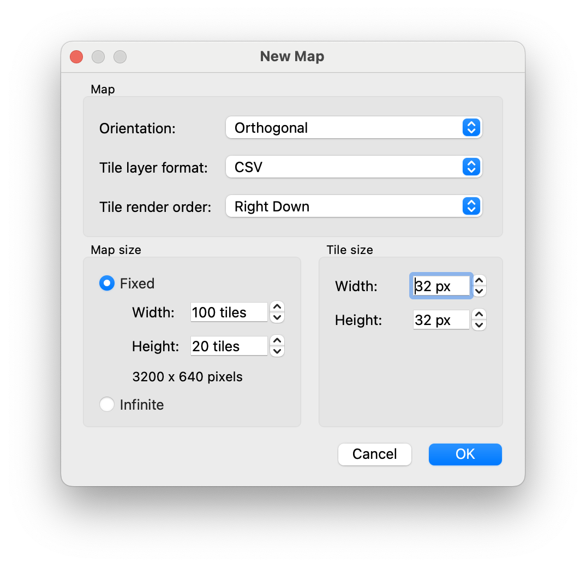Note que la map sera 3200x640 pixels. Si tu désires changer la taille du monde il suffit d'adapter la hauteur (height) et la longueur (width). Note que tu ne peux pas sélectionner "infinite", car Phaser n'est pas compatible avec.
Une fois les paramètres configurés, sélectionne "OK", et zoome sur le petit rectangle gris, qui constitue ta map. Assure-toi de sauvegarder ta map, au cas où tu dois fermer l'application de manière inattendue. Le format de Tiled est en .tmx.
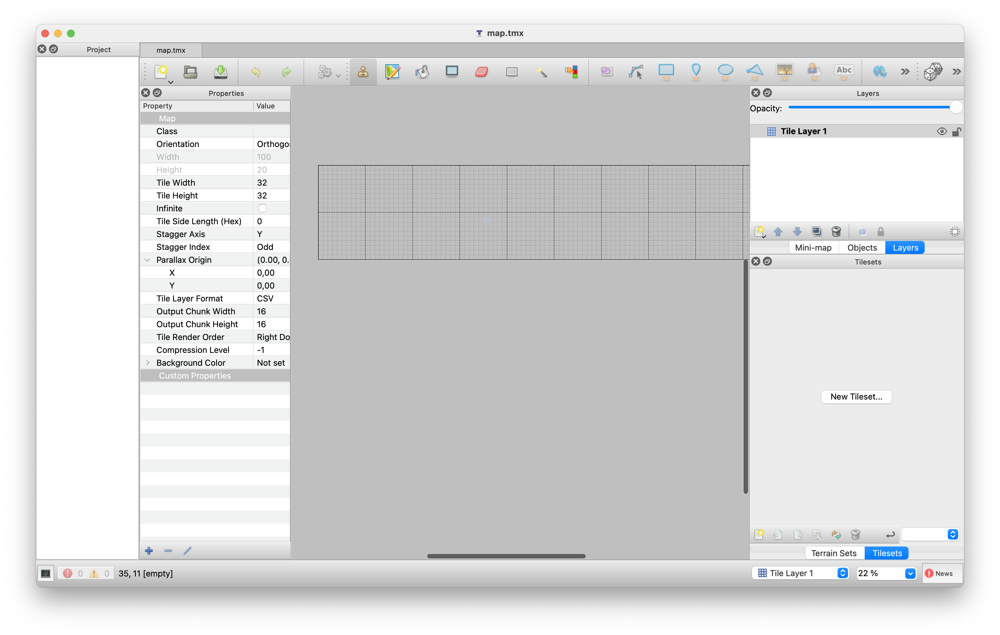Regardons plus en profondeur l'outil d'éditage de Tiled:
Pour ajouter des tiles, on utilise un "tileset". Un tileset est un fichier (une image) qui regroupe tous les tiles. Les tiles dans ce tileset doivent avoir la bonne taille (ici 32x32 pixels), sans espaces entre les différents tiles. Un exemple de tileset est présent dans l'image suivante. Tu peux retrouver un nombre énorme de tilesets sur le lien suivant. Assure-toi d'utiliser un tileset dont les images sont toutes dans une même image, et non dans un grand nombre d'images séparées.
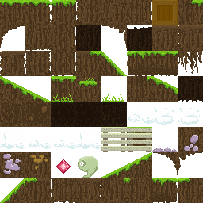Une fois que tu as trouvé ton tileset (tu peux également télécharger le mien avec un clic droit sur l'image), il faut l'intégrer dans Tiled. Appuie sur "New Tileset", et une nouvelle fenêtre apparaitra. Il n'y a pas besoin de changer un nombre énorme de paramètres, il suffit de cocher la case "Embed in map", de donner un nom, et d'importer notre fichier tileset.
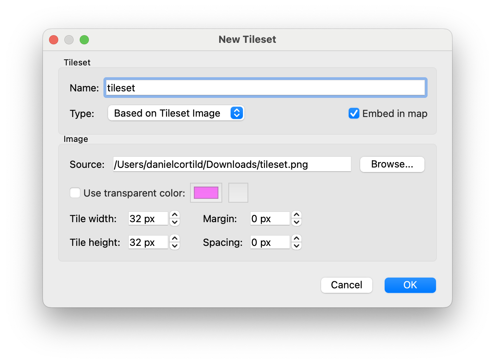Ce n'est bien entendu pas obligatoire d'utiliser les mêmes noms qu'ici, mais n'oublie pas d'adapter les noms dans ton code plus tard alors!
En bas à droite, tu trouveras tous tes tiles importés maintenant. Super!
Avant de créer nore map, on doit d'abord créer des calques ("layers" en anglais). Ceci est important, car cela nous permet de distinguer entre l'arrière-plan, les objets, les plateformes, etc. Crée deux calques de tiles (Tile Layer), un qui s'appelle "layer_platforms" (pour les plateformes) et un qui s'appelle "layer_background" (pour l'arrière-plan). Tu peux effacer le calque pré-existant. Notes que l'ordre des calques est important! Tu peux les déplacer, mais assure-toi que le calque des plateformes soit au dessus du calque de l'arrière-plan.
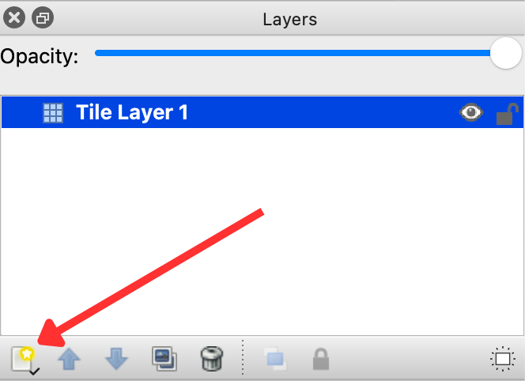Maintenant, tu peux remplir l'arrière-plan (layer_background) et les plateformes (layer_platforms). Afin de rendre la configuration plus simple, tu peux cacher / montrer les différents calques grâce au petit logo de l'oeil. À la fin, montres les deux calques afin de visualiser ta map. Sois plus créatif que moi 😜.
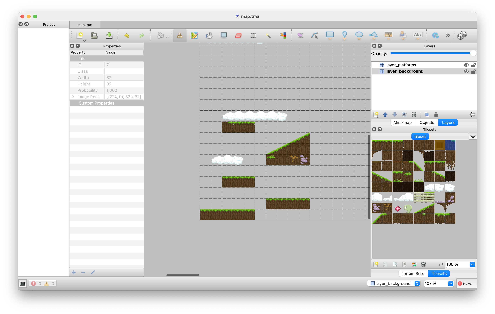Avant de pouvoir intégrer la map dans Phaser, on doit préciser ce qui est solide et ce qui ne l'est pas. Afin de ce faire, trouve le logo "edit tileset" en bas de la colonne à droite. Une nouvelle fenêtre s'ouvre dans laquelle on peut ajouter des propriétés à notre tileset.
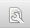Sélectionne tous les tiles (soit en glissant sur tous ou en faisant CTRL / CMD + A), et sélectionne le "+" en bas de l'écran pour ajouter une propriété.
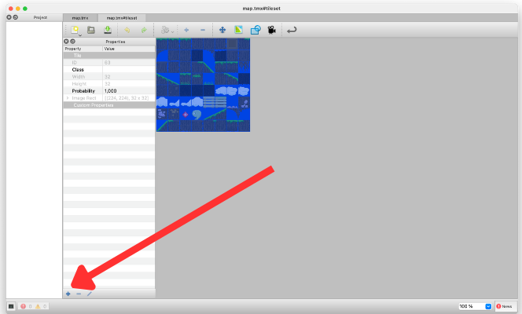Tu peux maintenant configurer la propriété. Nommons la "solide", qui est du type "Bool" (donc vrai ou faux). Cette propriété va indiquer si oui ou non le joueur peut rentrer en contact avec ce tile.
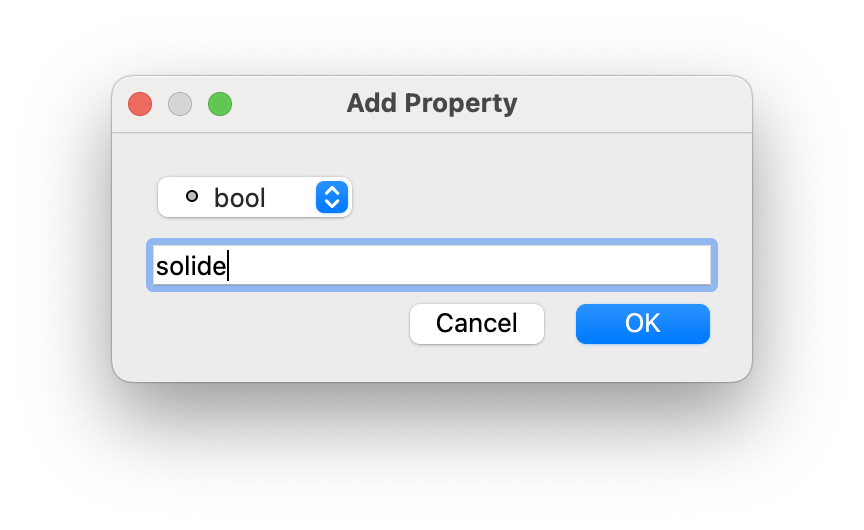Pour chaque tile avec laquelle le joueur peut rentrer en contact, coches la case "solide". Si tu ne désires pas que ton joueur puisse interagir avec ce tile (les éléments de l'arrière-plan), ne coches pas la case!
Fini la partie dans Tiled! Il suffit maintenant d'exporter notre map, et on pourra l'intégrer dans Phaser! Retourne sur ta carte avant d'exporter, sinon tu vas exporter uniquement les propriétés et non les positions des tiles.
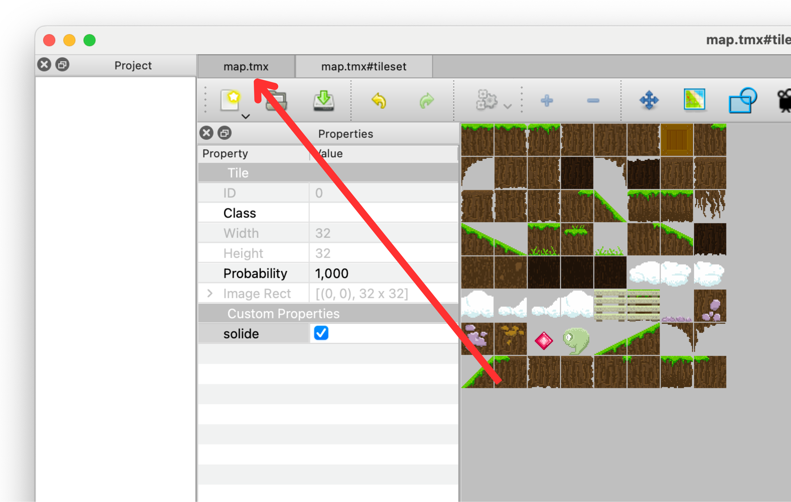Trouve la case "Export As" (Sous "File"), et exporte toute la map en format .json.
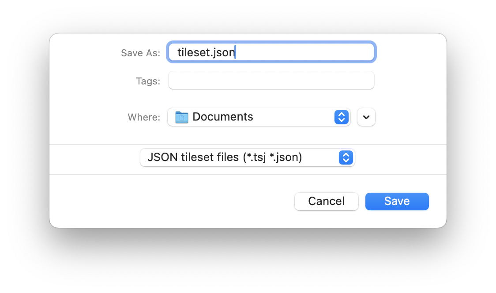Résultat: Tu as maintenant deux documents très importants! Tu as le document "tileset.png" (ou un autre nom), qui contient le tileset, et un document "tileset.json" (ou un autre nom), qui contient toutes les données exportées de Tiled.
On va maintenant intégrer notre nouvelle map dans Phaser! Créons d'abord un jeu très basique en Phaser. Mon jeu très basique est généré par le code suivant.
var config = {
type: Phaser.AUTO,
width: 800,
height: 600,
physics: {
default: 'arcade'
},
scene: {
preload,
create,
update
}
};
const game = new Phaser.Game(config);
function preload() {
// Charger les images
this.load.image("img_background", "assets/sky.png");
this.load.image("img_platform", "assets/platform.png");
this.load.image("img_player", "player.png");
}
function create() {
// Ajouter l'arrière-plan
this.add.image(400, 300, "img_background");
// Groupe statique pour les plateformes
this.platforms = this.physics.add.staticGroup();
// Créer les platesformes
this.platforms.create(200, 584, "img_platform");
this.platforms.create(600, 584, "img_platform");
this.platforms.create(50, 400, "img_platform");
// Créer le joueur
this.player = this.physics.add.sprite(100, 450, 'img_player');
this.player.setCollideWorldBounds(true);
this.player.body.setGravityY(300);
// Éviter le passage à travers les plateformes
this.physics.add.collider(this.player, this.platforms);
// Créer les clés du clavier
this.key_D = this.input.keyboard.addKey(68);
this.key_A = this.input.keyboard.addKey(65);
this.key_W = this.input.keyboard.addKey(87);
}
function update() {
// Déplacer le joueur
if(this.key_D.isDown) {
this.player.setVelocityX(100);
} else if(this.key_A.isDown) {
this.player.setVelocityX(-100);
} else {
this.player.setVelocityX(0);
}
if(this.key_W.isDown && this.player.body.touching.down) {
this.player.setVelocityY(-400);
}
}
Note: Ceci est un jeu très basique. Le but initial est de charger un monde plus compliqué, on
pourra
toujours ajouter des fonctionnalités plus complexes au jeu plus tard. De plus, afin de mieux organiser
tous
les documents à ajouter au jeu, j'ai mis toutes les images dans un dossier "assets". Ceci n'est bien
entendu pas obligatoire, et peut être changé en changeant le code dans le fonction preload().
La première chose importante à adapter est la taille de notre jeu. Le jeu de ci-haut est de 800 x 600 pixels, alors que notre map est de 3200 x 640 pixels. On ne va pas changer la largeur pour être 3200, comme on ne veut pas voir toute la map en même temps, mais la hauteur doit être corrigée.
Chargeons ensuite le tileset dans Phaser. Ceci peut être fait grâce à la commande
this.load.image() au sein de la fonction preload(), comme pour toutes nos autres
images. De manière analogue, on doit donner un nom interne au tileset, et préciser le nom réel du tileset.
this.load.image("img_tileset", "assets/tileset.png");
Il faut également charger tous les détails extraits de Tiled. Ceci peut se faire grâce à la commande
this.load.tilemapTiledJSON(), toujours dans la fonction preload().
this.load.tilemapTiledJSON("tiled_map", "assets/tileset.json");
Au sein de la fonction create(), il faut maintenant charger la map ainsi que le tileset. Les
deux sont stockées au sein du document JSON téléchargé de Tiled. Tu peux mettre ces fonctions où tu le
veux dans la fonction create(), mais je te recommande de ne pas le mettre à la fin.
// Ajouter la map exportée de Tiled
this.map = this.add.tilemap("tiled_map");
// Charger le tileset du fichier exporté de Tiled
this.tileset = this.map.addTilesetImage(
"tileset", // Ceci DOIT correspondre au "name" dans le document JSON (Ligne 6)
"img_tileset"
);
Ensuite on peut charger les calques. Voici le code pour charger le calque "layer_background" (celui de
l'arrière-plan), tu peux l'adapter afin d'également ajotuer celui des plateformes, dans une variable
s'appellant layer_platforms.
// Charger le calque de l'arrière-plan
this.background = this.map.createStaticLayer(
"layer_background", // Ceci DOIT correspondre au nom donné au calque dans Tiled
this.tileset
);
Rappelle-toi qu'on avait ajouté une propriété sur certains tiles. Cette propriété décrivait si ces tiles étaient solides ou non. On doit indiquer au code le nom et l'utilité de cette propriété. Cela peut être fait avec le code suivant.
this.platforms.setCollisionByProperty({ solide: true });
N'oublie bien entendu pas d'enlever la création de l'ancien groupe statique de plateformes ainsi que la création des plateformes, comme nous ne nous en servons plus.
Note qu'on a pas défini de collision entre le joueur et les plateformes. C'est parce que nos plateformes
s'appellent toujours this.platforms, donc la ligne de code qu'on a utilisée avant fonctionne
toujours.
this.physics.add.collider(this.player, this.platforms);
Dans la fonction update(), c'est important de changer le
this.player.body.touching.down en this.player.body.onFloor() (dans le code pour
le saut), comme l'ancienne version de détecter si le joueur est au sol ne fonctionnera plus.
On a maintenant une plus grande map, mais la caméra ne suit pas le joueur... Te souviens-tu comment corriger cela?
// Dans function create()
this.cameras.main.startFollow(this.player);
// Dans function update()
this.cameras.main.setFollowOffset(0, this.player.y - 180);
De plus, afin de s'assurer qu'on ne puisse pas quitter la map, et que la caméra ne montre pas des endroits en dehors de la map, on peut ajouter une limite au monde et à la map.
this.physics.world.setBounds(0, 0, 3200, 640);
this.cameras.main.setBounds(0, 0, 3200, 640);
Le code adapté ressemble donc au code suivant.
var config = {
type: Phaser.AUTO,
width: 1000,
height: 640,
physics: {
default: 'arcade'
},
scene: {
preload,
create,
update
}
};
const game = new Phaser.Game(config);
function preload() {
// Charger les images
this.load.image("img_player", "player.png");
// Charger le tileset
this.load.image("img_tileset", "assets/tileset.png");
this.load.tilemapTiledJSON("tiled_map", "assets/tileset.json");
}
function create() {
// Ajouter la map exportée de Tiled
this.map = this.add.tilemap("tiled_map");
// Charger le tileset du fichier exporté de Tiled
const tileset = map.addTilesetImage("tileset", "img_tileset");
// Charger le calque de l'arrière-plan
this.background = map.createStaticLayer("layer_background", tileset);
// Charger le calque des plateformes
this.platforms = map.createStaticLayer("layer_platforms", tileset
);
// Marque le calque des plateformes comme solide
this.platforms.setCollisionByProperty({ solide: true });
// Créer le joueur
this.player = this.physics.add.sprite(100, 450, 'img_player');
this.player.setCollideWorldBounds(true);
this.player.body.setGravityY(300);
// Éviter le passage à travers les plateformes
this.physics.add.collider(this.player, this.platforms);
// Créer les clés du clavier
this.key_D = this.input.keyboard.addKey(68);
this.key_A = this.input.keyboard.addKey(65);
this.key_W = this.input.keyboard.addKey(87);
}
function update() {
// Déplacer le joueur
if (this.key_D.isDown) {
this.player.setVelocityX(100);
} else if (this.key_A.isDown) {
this.player.setVelocityX(-100);
} else {
this.player.setVelocityX(0);
}
if (this.key_W.isDown && this.player.body.touching.down) {
this.player.setVelocityY(-400);
}
}